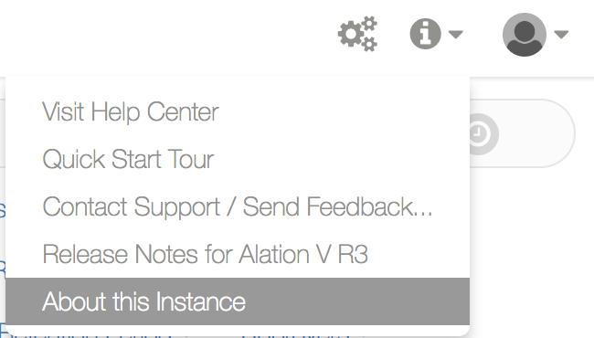

Update Alation¶
Customer Managed Applies to customer-managed instances of Alation
Updating Alation to the latest available release provides you with access to new features, improved existing functionality, and enhanced performance. When a new update becomes available, Alation sends email notifications to the Alation Admins who have their email addresses registered at the Alation Customer Portal.
Note
Updating Alation causes downtime. Make sure to communicate the update schedule to your user community according to your organization policy.
The following sections describe update procedures for specific Alation versions and features.
Backup Reminder¶
Before installing an update, make sure that the Alation backup process runs correctly and that you have a valid backup of your system. To check if the recent backup files are available in your instance, check the /data2/backup folder (path inside the Alation shell).
sudo /etc/init.d/alation shell
cd /data2/backup
Alation backup file name ends in alation_backup.tar.gz. There must be at
least one backup from one day before to ensure you preserve the maximum
of data if you have to restore from the backup later.
For details on backing up and restoring Alation, see Back Up and Restore.
To follow an even safer update scenario than restoring from an Alation backup, you can create a complete system snapshot or image before installing the update if your infrastructure allows for the creation of a system image. Make sure that the snapshot or image restore process is tested at least once on a test server. After a successful update, you can delete this image.
Updating Alation¶
You can update manually when a new build is released. Updating Alation to a newer version includes several steps:
Providing a staging environment that is an exact replica of your production system.
Ensuring you have a valid backup or a system image: see Update Safety Best Practice.
Validating the current production backups by test-restoring a backup in a test or dev environment. For details on backing up and restoring Alation, see Back Up and Restore.
Finding your update instruction. Steps depend on your current release and instance configuration: standalone or HA. Use the update steps specific to a release.
Updating your staging environment and having users check the functionality on the staging environment after the update.
Documenting the update plan for Production.
Updating your Production environment.
Finding Out Your Current Version¶
To find out your current version of Alation, hover over the Info (Question Mark) menu on the main toolbar then click About this Instance to open the instance information page.
About this Instance
{kind=link}
Your current version number will also be included in the update notification email issued to Alation Admins when a new version is released.
Alternatively, to find out the version you are currently using, run the following command outside of the Alation shell on the Alation host:
update-alternatives --display alation
The output lists all Alation versions installed on the host. The version that is currently active is shown after link currently points to. The output you will see will be similar to the following:
[alation.admin@alation-instance ~]$ update-alternatives --display alation
alation - status is manual.
link currently points to /opt/alation/alation-5.5.0.35723
/opt/alation/alation-5.5.0.35560 - priority 35560
/opt/alation/alation-5.5.0.33922 - priority 33922
/opt/alation/alation-5.5.0.35723 - priority 35723
current ‘best’ version is /opt/alation/alation-5.5.0.35723.
[alation.admin@alation-instance ~]$